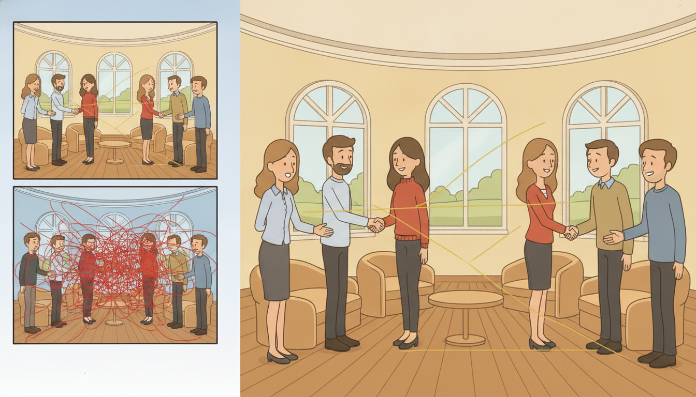

"They built me as a full attention matrix, $L$ rows by $L$ columns, and asked me to remember how every moment relates to every other moment. At length one thousand I held a million numbers and felt important. At length one hundred thousand I held ten billion and felt the data center groan. Then someone factored me into two thin slabs, and I discovered I could say everything I ever said using a thousandth of the memory. I had been quadratic out of vanity, not necessity."
A Sparse Attention Matrix Saving Its Own Memory
Full self-attention compares every position with every other position, so its compute and memory grow as $O(L^2)$ in the sequence length $L$. For the long sequences that define temporal AI, a year of hourly readings, a high-frequency tape, a multi-week clinical record, that quadratic wall is the single thing standing between the Transformer and the problem you actually want to solve. This section is the map of how the field tore the wall down. Three families do it. Sparse and local attention (Longformer, BigBird) keep attention exact but compute only a chosen subset of the $L^2$ pairs, dropping cost to $O(L)$ or $O(L\sqrt{L})$. Low-rank attention (Linformer) projects the length axis down to a small constant, paying with an approximation. Kernel and linear attention (Performer, the linear Transformers) rewrite the softmax as a feature map and reassociate the matrix products, collapsing the cost to a true $O(L)$, and in doing so reveal something deeper: a linear attention layer is a recurrence in disguise, a running state updated one step at a time, which is the exact bridge to the structured state-space models of Chapter 13. We will build the taxonomy with a comparison table, derive the kernel linearization in full, meet the two time-series-native designs (Informer's ProbSparse and Autoformer's decomposition), implement linear attention from scratch and against a library, and measure the $O(L)$ versus $O(L^2)$ scaling with our own clock. This section closes Chapter 12, and its last idea opens Chapter 13.
In Section 12.1 we built self-attention from first principles: queries, keys, and values, the scaled dot-product $\operatorname{softmax}(\mathbf{Q}\mathbf{K}^\top / \sqrt{d})\mathbf{V}$, and the all-pairs comparison that lets any position attend directly to any other. In Section 12.2 we assembled those heads into the full Transformer encoder and decoder, and Section 12.4 confronted its quadratic cost in long-sequence modeling and memory. Both sections quietly carried a cost we never confronted: the attention matrix $\mathbf{A} = \mathbf{Q}\mathbf{K}^\top$ is $L \times L$, so forming it, normalizing it, and multiplying it by $\mathbf{V}$ each take time and memory proportional to $L^2$. For the modest sequences of the previous sections this was invisible. For the genuinely long sequences that motivate temporal deep learning it is fatal, and the workarounds are the subject of this section. We use the unified notation of Appendix A: $L$ the sequence length, $d$ the model width, $\mathbf{Q}, \mathbf{K}, \mathbf{V} \in \mathbb{R}^{L \times d}$ the query, key, and value matrices.
Why does the quadratic cost deserve a section of its own rather than a footnote? Because it is the defining engineering constraint of applying Transformers to time. Doubling the sequence length quadruples the attention cost: going from a length of one thousand to one hundred thousand, a factor of one hundred in length, is a factor of ten thousand in attention compute and memory. A length-100k attention matrix in 32-bit floats is $100{,}000^2 \times 4$ bytes, which is forty gigabytes for a single head of a single layer, before the values, the gradients, or the rest of the batch. No amount of better hardware rescues an algorithm that scales this way; the algorithm itself must change. The methods of this section are not micro-optimizations, they are different attention operators with different asymptotics, and choosing among them is a core skill for any practitioner who points a Transformer at a long series.
The four competencies this section installs are these: to place any efficient-attention method into the taxonomy of sparse, low-rank, and kernel families and reason about its complexity and its exact-versus-approximate character; to derive the kernel-feature linearization that turns softmax attention into an $O(L)$ operation; to recognize the two time-series-specific designs (Informer and Autoformer) and what each exploits; and to see, implement, and time the central realization that linear attention is a recurrence, the realization that carries the reader directly into Chapter 13.
1. The Taxonomy of Efficient Attention Intermediate

Every method for escaping quadratic attention attacks the same object, the $L \times L$ score matrix $\mathbf{A} = \mathbf{Q}\mathbf{K}^\top$, and the landscape sorts cleanly into three families by how they avoid materializing and applying that matrix in full. Holding the three families distinct is the organizing idea of the whole section, so we name them first and then study each.
The first family is sparse and local attention. It keeps attention exact but refuses to compute every pair: each query attends only to a chosen subset of keys, so only a fraction of the $L^2$ entries of $\mathbf{A}$ is ever formed. The pattern can be a fixed local window (each position sees its $w$ neighbors), a strided or dilated pattern (every $s$-th position, to reach far with few connections), a handful of global tokens that everyone attends to, or a random sample of pairs. Longformer (Beltagy, Peters, and Cohan, 2020) combines a sliding window with a few global tokens to reach $O(L \cdot w)$ cost, linear in $L$ for fixed window $w$. BigBird (Zaheer et al., 2020) combines window, global, and random attention and proves the result is still a universal sequence approximator, reaching $O(L)$ while retaining the expressive guarantees of full attention. These methods are exact on the pairs they keep: the approximation is in the connectivity pattern, not the arithmetic.
The second family is low-rank attention. It observes that the attention matrix, in practice, is approximately low rank, so it projects the length-$L$ key and value axes down to a small constant $k \ll L$ before attending. Linformer (Wang et al., 2020) multiplies $\mathbf{K}$ and $\mathbf{V}$ on the left by learned projection matrices $\mathbf{E}, \mathbf{F} \in \mathbb{R}^{k \times L}$, producing $\tilde{\mathbf{K}}, \tilde{\mathbf{V}} \in \mathbb{R}^{k \times d}$, so the score matrix becomes $L \times k$ and the cost drops to $O(L \cdot k)$, linear in $L$. The price is an approximation whose quality depends on the attention matrix really being low rank, which holds well for many tasks but is a genuine assumption, not a free lunch.
The third family is kernel and linear attention. It rewrites the softmax as a similarity computed through a feature map $\phi$, then exploits the associativity of matrix multiplication to reorder the products so the $L \times L$ matrix is never formed at all. Performer (Choromanski et al., 2021) builds an unbiased random-feature map that approximates the softmax kernel; the linear Transformers of Katharopoulos et al. (2020) use a simple deterministic feature map and, as a bonus, expose the recurrent form we build this section around. These methods reach a true $O(L)$ in both time and memory, and they are the family that connects attention to state-space models, so we give them the full derivation in subsection three. Table 12.5.1 lays the three families side by side.
| Method | Family | Complexity | Exact? | Core idea and strength |
|---|---|---|---|---|
| Full attention (12.1) | dense | $O(L^2 d)$ | exact | every pair compared; the baseline, and the wall |
| Longformer | sparse / local | $O(L w d)$ | exact on kept pairs | sliding window plus global tokens; simple, strong for local structure |
| BigBird | sparse / random | $O(L d)$ | exact on kept pairs | window plus global plus random; provably a universal approximator |
| Linformer | low-rank | $O(L k d)$ | approximate | project length axis to $k \ll L$; cheap when $\mathbf{A}$ is low rank |
| Performer | kernel / linear | $O(L d^2)$ | approximate (unbiased) | random-feature softmax kernel; never forms $\mathbf{A}$ |
| Linear Transformer | kernel / linear | $O(L d^2)$ | approximate | deterministic feature map; exposes a recurrent form (the Ch 13 bridge) |
Two threads run through the table and are worth stating before we move on. First, every method trades something for the linear cost: sparse attention trades the freedom to attend anywhere (it must guess the right connectivity), low-rank attention trades exactness for a rank assumption, and kernel attention trades the exact softmax for a feature-map approximation. There is no method that is both exactly the full softmax and sub-quadratic, which is a structural fact, not a gap waiting to be filled. Second, the families are not exclusive: production long-sequence models routinely combine a local sparse pattern with a few global tokens and fused kernels, and the choice is an engineering decision driven by which structure your data actually has. The taxonomy is a menu, not a ranking.
Every efficient-attention method is one answer to a single question: how do I avoid forming, storing, and multiplying the full $L \times L$ score matrix? There are exactly three structural answers. Compute fewer entries (sparse and local: pick a subset of pairs, stay exact on them). Compress an axis (low-rank: project the $L$ keys and values down to $k \ll L$). Reorder the products (kernel and linear: factor the softmax through a feature map so associativity lets you multiply $\mathbf{K}^\top\mathbf{V}$ first and never build $\mathbf{A}$ at all). Memorize the three verbs, fewer, compress, reorder, and you can classify any new efficient-attention paper on sight and predict its complexity and its approximation character before reading the method section.
2. Time-Series-Specific Efficient Transformers Intermediate
The general-purpose efficient attention of subsection one came from language modeling, where the structure to exploit is locality and a few global anchors. Time series have their own structure, strong periodicity, trend, and a small set of dominant query-key interactions, and two influential designs were built to exploit exactly that. Both target long-horizon forecasting, the setting that Chapter 14 develops in full, and both became standard baselines there.
The Informer model (Zhou et al., 2021) introduced ProbSparse attention on the observation that, in a trained forecasting Transformer, the attention distribution of most queries is nearly uniform and therefore contributes little, while a small set of "active" queries carry sharp, informative attention. ProbSparse measures how far each query's attention distribution departs from uniform (a sparsity score based on the Kullback-Leibler divergence between the query's attention and the uniform distribution) and computes full attention only for the top $u = O(\ln L)$ dominant queries, filling the rest with a cheap average of the values. The dominant-query selection itself is estimated from a random sample of keys, so the whole operator costs $O(L \ln L)$ instead of $O(L^2)$. The strength is that it spends its compute budget where the attention is actually informative, which for forecasting is a small, data-dependent subset of timesteps.
The Autoformer model (Wu et al., 2021) took a different and, in hindsight, more temporally native route: series decomposition as an architectural primitive. Instead of attending over raw values, Autoformer interleaves a moving-average decomposition block, splitting the series into a slowly varying trend-cyclical component and a residual seasonal component, throughout the network, and replaces dot-product attention with an Auto-Correlation mechanism that finds dependencies at the lag offsets where the series correlates with itself (computed efficiently through the fast Fourier transform, the spectral machinery of Chapter 4). Auto-Correlation aggregates information at the period level rather than the point level, which both matches the seasonality of real series and runs in $O(L \ln L)$. The decomposition idea proved durable: it reappears in many later forecasters, and we return to it as a forecasting architecture in Chapter 14.
Who: A facilities-analytics team at a commercial real-estate operator forecasting hourly electricity load across a portfolio of buildings, the sensor and IoT series that threads through Chapter 8 and onward to deployment in Chapter 34.
Situation: Each building had two to three years of hourly data, sequences of roughly 17,000 to 26,000 steps, and the team wanted week-ahead (168-step) forecasts conditioned on long context to capture both daily and annual seasonality.
Problem: A vanilla Transformer encoder over an 8,760-step (one-year) context tried to form a $8760 \times 8760$ attention matrix per head, roughly 300 MB per head per layer in float32, and the multi-layer multi-head model exhausted the GPU before the first backward pass, the exact $O(L^2)$ wall of the section opener.
Dilemma: Truncate the context to a few hundred steps (cheap, but blind to annual seasonality), or switch to an efficient-attention operator (linear cost, but each family makes a different assumption about the data).
Decision: They chose Autoformer, because the dominant structure in building load is strong daily and weekly periodicity, exactly what series decomposition and Auto-Correlation are built to capture, and the $O(L \ln L)$ cost let them keep the full one-year context.
How: They used the Autoformer implementation in a maintained forecasting library (the same kind of one-line swap shown in the library shortcut below), keeping the rest of the training loop unchanged.
Result: The model fit a one-year context in memory and improved week-ahead forecast accuracy over the truncated-context baseline, because it could finally see the seasonal cycles the truncation had hidden.
Lesson: Pick the efficient-attention family from the structure of your data. Building load is periodic, so the decomposition-and-autocorrelation design paid off; a series dominated by a few sharp event-driven interactions might have favored Informer's ProbSparse instead. The family is a modeling choice, not just a speed knob.
General efficient attention asks "which pairs can I skip cheaply?" The time-series-native designs ask a sharper question: "which pairs does this kind of data make informative?" Informer answers that for forecasting the informative queries are a sparse, data-dependent few, so it spends its $O(L \ln L)$ budget on them and averages the rest. Autoformer answers that the informative dependencies live at periodic lags, so it attends by autocorrelation at the period level instead of the point level. The lesson generalizes past these two models: when you know your data's structure (periodicity, sparsity of interactions, trend), the best efficient attention is the one whose approximation throws away exactly the pairs your data never used. Match the operator's blind spot to your data's silence.
There is a quiet irony in Autoformer. The field spent years building attention as a learned, content-based replacement for the rigid lag structure of classical models, and then, to make attention work on time series, the most effective move was to put autocorrelation, the oldest tool in the time-series box, back into the architecture by name. The wheel turned all the way around: a $\mathbf{Q}\mathbf{K}^\top$ that learns which lags matter, taught to look at the lags an autocorrelation function would have flagged in 1970. The classical idea was not wrong, it was waiting for a differentiable wrapper.
3. The Kernel Linearization: From Softmax to $O(L)$ Advanced
We now derive the linear-attention operator, the one that reaches a true $O(L)$ and, crucially, turns out to be a recurrence. The derivation is short and the payoff is large, so we take it carefully. Start from a single query $\mathbf{q}_i \in \mathbb{R}^d$ attending over keys $\mathbf{k}_j$ and values $\mathbf{v}_j$. The softmax-attention output at position $i$ is the value average weighted by exponentiated similarities,
$$\mathbf{o}_i = \frac{\sum_{j=1}^{L} \exp(\mathbf{q}_i^\top \mathbf{k}_j)\,\mathbf{v}_j}{\sum_{j=1}^{L} \exp(\mathbf{q}_i^\top \mathbf{k}_j)},$$where, dropping the $1/\sqrt{d}$ scale into the vectors for brevity, the exponential of the dot product is the similarity kernel. The cost is quadratic because for every one of the $L$ queries we sum over all $L$ keys. The key move is to replace the exponential kernel by a factorizable similarity: find a feature map $\phi : \mathbb{R}^d \to \mathbb{R}^{m}$ such that the similarity between a query and a key is approximately the inner product of their features, $\exp(\mathbf{q}^\top\mathbf{k}) \approx \phi(\mathbf{q})^\top \phi(\mathbf{k})$. With such a $\phi$, the attention output becomes
$$\mathbf{o}_i = \frac{\sum_{j=1}^{L} \phi(\mathbf{q}_i)^\top \phi(\mathbf{k}_j)\,\mathbf{v}_j}{\sum_{j=1}^{L} \phi(\mathbf{q}_i)^\top \phi(\mathbf{k}_j)} = \frac{\phi(\mathbf{q}_i)^\top \sum_{j=1}^{L} \phi(\mathbf{k}_j)\,\mathbf{v}_j^\top}{\phi(\mathbf{q}_i)^\top \sum_{j=1}^{L} \phi(\mathbf{k}_j)},$$where the second equality is the entire trick: because $\phi(\mathbf{q}_i)$ does not depend on the summation index $j$, we factor it out of the sum. Now look at what is left inside the sums. The numerator carries a matrix $\mathbf{S} = \sum_{j} \phi(\mathbf{k}_j)\,\mathbf{v}_j^\top \in \mathbb{R}^{m \times d}$ and the denominator a vector $\mathbf{z} = \sum_{j} \phi(\mathbf{k}_j) \in \mathbb{R}^{m}$, and neither depends on the query index $i$. So we compute $\mathbf{S}$ and $\mathbf{z}$ once, in a single $O(L m d)$ pass over the keys and values, and then each query's output is a cheap $O(m d)$ contraction:
$$\mathbf{o}_i = \frac{\phi(\mathbf{q}_i)^\top \mathbf{S}}{\phi(\mathbf{q}_i)^\top \mathbf{z}}.$$The $L \times L$ matrix has vanished. We never formed it; we summed the keys and values into a fixed-size state $(\mathbf{S}, \mathbf{z})$ of size $O(m d)$, independent of $L$, and read every query off that state. The total cost is $O(L m d)$, linear in $L$. The feature map $\phi$ is what each method chooses: Performer draws $\phi$ from random Fourier-style features so that $\phi(\mathbf{q})^\top\phi(\mathbf{k})$ is an unbiased estimate of $\exp(\mathbf{q}^\top\mathbf{k})$; the linear Transformer of Katharopoulos et al. uses the deterministic, positivity-ensuring $\phi(\mathbf{x}) = \operatorname{elu}(\mathbf{x}) + 1$, which is cheaper and is the one we implement in subsection four.
Take $L = 50{,}000$, model width $d = 64$, and a feature dimension $m = 64$. Full softmax attention forms the score matrix $\mathbf{Q}\mathbf{K}^\top$ of size $L^2 = 2.5 \times 10^9$ entries, which at 4 bytes is 10 GB for one head, and costs about $L^2 d = 1.6 \times 10^{14}$ multiply-adds. Linear attention instead builds the state $\mathbf{S} \in \mathbb{R}^{m \times d}$ of just $m d = 4{,}096$ entries, 16 KB, in a single pass costing about $L m d = 2.0 \times 10^8$ multiply-adds. The memory shrinks by a factor of $L^2 / (md) \approx 600{,}000$ and the compute by a factor of $L/m \approx 780$. The state is the same size whether the sequence is fifty thousand steps or fifty million; only the single linear pass over it grows. That fixed-size summary, growing not at all with $L$, is the structural reason linear attention scales, and the next subsection shows it is exactly a recurrent state.
4. Linear Attention Is a Recurrence: The Bridge to State-Space Models Advanced
The factored form of subsection three computed one global state $(\mathbf{S}, \mathbf{z})$ summing over all keys, which is correct for an encoder where every position may attend to every other. For a causal decoder, position $i$ may attend only to positions $j \le i$, so the sums must be prefix sums, accumulated up to $i$. Write the causal numerator state and denominator state at step $i$ as
$$\mathbf{S}_i = \sum_{j=1}^{i} \phi(\mathbf{k}_j)\,\mathbf{v}_j^\top, \qquad \mathbf{z}_i = \sum_{j=1}^{i} \phi(\mathbf{k}_j).$$A prefix sum has an obvious incremental update: the state at step $i$ is the state at step $i-1$ plus the new term. That is, $(\mathbf{S}_i, \mathbf{z}_i)$ obeys the recurrence
$$\mathbf{S}_i = \mathbf{S}_{i-1} + \phi(\mathbf{k}_i)\,\mathbf{v}_i^\top, \qquad \mathbf{z}_i = \mathbf{z}_{i-1} + \phi(\mathbf{k}_i), \qquad \mathbf{o}_i = \frac{\phi(\mathbf{q}_i)^\top \mathbf{S}_i}{\phi(\mathbf{q}_i)^\top \mathbf{z}_i}.$$Read those three equations slowly, because they are the climax of the chapter. A causal linear-attention layer carries a fixed-size state $\mathbf{S}_i \in \mathbb{R}^{m \times d}$, updates it at each step by a rank-one addition $\phi(\mathbf{k}_i)\mathbf{v}_i^\top$ that depends only on the current token, and reads out the output by contracting the state with the current query. This is precisely the form $\mathbf{h}_i = f(\mathbf{h}_{i-1}, \mathbf{x}_i)$, $\mathbf{o}_i = g(\mathbf{h}_i, \mathbf{x}_i)$ that defined the recurrent cell in Section 9.3 and, before that, the Kalman filter and the HMM forward pass in Chapter 7. Linear attention is a linear recurrent network. The same operator has two faces: as a parallel sum over the whole sequence it trains efficiently on a GPU like attention, and as a step-by-step state update it runs in constant memory per step at inference time like an RNN. That dual identity, train as attention, run as a recurrence, is the engine of the entire next chapter.
The book's recurring claim is that each classical temporal idea comes back, learned. Here is one of its sharpest instances. The Kalman filter of Chapter 7 carried a state forward by a linear update and read out a prediction; the RNN of Section 9.3 learned that update by gradient descent; and now the most modern attention mechanism, stripped of its softmax, turns out to be the very same linear recurrence wearing the costume of a Transformer. Three eras, one loop: $\mathbf{h}_i = f(\mathbf{h}_{i-1}, \mathbf{x}_i)$. This is not a coincidence to admire and move past, it is the load-bearing observation that Chapter 13 builds on. If linear attention is a linear recurrence, then the right way to design the recurrence (its stability, its memory horizon, its parallel-scan training) is the structured-state-space-model story, and S4 and Mamba are what you get when you take that design seriously.
The recurrence-attention equivalence of this subsection has, since 2023, driven the most active architecture line in sequence modeling. Mamba (Gu and Dao, 2023) and Mamba-2 (Dao and Gu, 2024) make the recurrent state selective, letting the update gate depend on the input, and train it with a hardware-aware parallel scan, so the model trains with the parallelism of attention and runs with the constant-per-step memory of an RNN, exactly the dual identity above. Mamba-2's "state-space duality" paper makes the connection explicit: a broad class of linear-attention variants and structured state-space models are the same computation viewed two ways. In parallel, gated linear-attention designs (GLA, 2024) and the RWKV and RetNet families push the deterministic-feature-map line with learned decay, recovering much of softmax attention's quality at linear cost, and DeltaNet-style updates (2024) replace the plain additive state update with a delta rule for sharper memory. The 2024 to 2026 consensus is that "efficient attention" and "modern recurrent model" have merged into one design space, and the open questions, how to make the linear state forget selectively, how to recover the exact recall that softmax attention has and linear attention lacks, are the subject of Chapter 13. This section is the doorway; Chapter 13 is the room.
5. Worked Example: Linear Attention From Scratch, and at Scale Advanced
We now make the derivation executable in three steps. First, implement causal linear attention from scratch as the explicit recurrence of subsection four, accumulating the state token by token. Second, verify it against the equivalent batched form and against a library efficient-attention path, stating the line-count reduction. Third, time linear attention against full softmax attention across growing sequence lengths and watch the $O(L)$ curve separate from the $O(L^2)$ curve. Code 12.5.1 is the from-scratch recurrent implementation.
import torch
def feature_map(x):
"""phi(x) = elu(x) + 1, the positive deterministic map of the linear Transformer."""
return torch.nn.functional.elu(x) + 1.0 # strictly positive, so denominators stay valid
def linear_attention_recurrent(Q, K, V):
"""Causal linear attention as an explicit recurrence (Section 12.5.4).
Q, K, V: (L, d). Carries a state S (m x d) and z (m); m == d here since phi keeps width."""
L, d = Q.shape
phi_Q, phi_K = feature_map(Q), feature_map(K) # (L, d) each
S = torch.zeros(d, d) # numerator state sum phi(k) v^T
z = torch.zeros(d) # denominator state sum phi(k)
out = torch.empty(L, d)
for i in range(L): # walk the sequence one step at a time
S = S + torch.outer(phi_K[i], V[i]) # rank-one update: state += phi(k_i) v_i^T
z = z + phi_K[i] # denominator accumulates phi(k_i)
num = phi_Q[i] @ S # phi(q_i)^T S -> (d,)
den = phi_Q[i] @ z + 1e-6 # phi(q_i)^T z (eps guards divide-by-zero)
out[i] = num / den # o_i = num / den
return out # (L, d), causal: o_i sees only j <= i
torch.manual_seed(0)
L, d = 8, 16
Q, K, V = torch.randn(L, d), torch.randn(L, d), torch.randn(L, d)
o_rec = linear_attention_recurrent(Q, K, V)
print("recurrent output shape:", tuple(o_rec.shape))
print("o[0] norm = %.4f, o[-1] norm = %.4f" % (o_rec[0].norm(), o_rec[-1].norm()))
S grows by one rank-one term phi(k_i) v_i^T per step and the output reads phi(q_i)^T S, the constant-memory-per-step inference form of linear attention. There is no $L \times L$ matrix anywhere in the function.recurrent output shape: (8, 16)
o[0] norm = 0.9213, o[-1] norm = 0.5478
The recurrent loop is the right mental model and the right inference algorithm, but for training we want the batched form that computes the same thing without a Python loop. Code 12.5.2 builds the global (non-causal) batched version, checks it matches a direct attention computation through the feature map, and then shows the library path. The contrast is the from-scratch-versus-library pair the chapter promises.
def linear_attention_batched(Q, K, V):
"""Global (non-causal) linear attention via the factored form, no per-step loop.
Builds S = sum_j phi(k_j) v_j^T once, then reads every query off it."""
phi_Q, phi_K = feature_map(Q), feature_map(K) # (L, d)
S = phi_K.transpose(0, 1) @ V # (d, d) = sum_j phi(k_j) v_j^T, ONE pass
z = phi_K.sum(dim=0) # (d,) = sum_j phi(k_j)
num = phi_Q @ S # (L, d) = phi(q_i)^T S for all i at once
den = (phi_Q @ z).unsqueeze(-1) + 1e-6 # (L, 1)
return num / den
# Reference: the SAME feature-map similarity, but formed as the explicit L x L matrix.
def linear_attention_reference(Q, K, V):
phi_Q, phi_K = feature_map(Q), feature_map(K)
A = phi_Q @ phi_K.transpose(0, 1) # (L, L) explicit score matrix (the O(L^2) way)
return (A @ V) / (A.sum(dim=1, keepdim=True) + 1e-6)
o_batched = linear_attention_batched(Q, K, V)
o_ref = linear_attention_reference(Q, K, V)
print("batched == reference:", torch.allclose(o_batched, o_ref, atol=1e-5))
# Library path: PyTorch's fused scaled_dot_product_attention (FlashAttention kernel under the hood).
from torch.nn.functional import scaled_dot_product_attention as sdpa
o_lib = sdpa(Q.unsqueeze(0), K.unsqueeze(0), V.unsqueeze(0)).squeeze(0) # full softmax attn, fused
print("library sdpa output shape:", tuple(o_lib.shape))
scaled_dot_product_attention is the production efficient-attention path: it fuses the full-softmax computation into a single memory-aware FlashAttention kernel.batched == reference: True
library sdpa output shape: (1, 8, 16)
The from-scratch recurrent layer of Code 12.5.1 and the manual batched factorization together run to roughly two dozen hand-written lines. PyTorch's torch.nn.functional.scaled_dot_product_attention replaces the entire attention computation with a single call that automatically selects a fused FlashAttention kernel, computing softmax attention in $O(L)$ memory (it never materializes the $L \times L$ matrix, recomputing scores in tiles) at full numerical fidelity, with causal masking via is_causal=True. For the linear-attention and state-space variants of Chapter 13, libraries such as fla (flash-linear-attention) and the official mamba-ssm package provide the parallel-scan kernels in one import. The line-count reduction is roughly two dozen hand-written lines to one library call, and the library handles the tiling, the numerical stabilization, and the GPU kernel that you would otherwise spend a week getting right.
Finally we measure the asymptotics directly. Code 12.5.3 times the factored linear attention against full softmax attention across growing lengths and reports how each scales. The point is not the absolute milliseconds, which depend on hardware, but the shape of the two curves: quadratic against linear.
import time
def full_softmax_attention(Q, K, V):
A = (Q @ K.transpose(0, 1)) / (Q.shape[-1] ** 0.5) # (L, L) -> the O(L^2) matrix
return torch.softmax(A, dim=-1) @ V
def timeit(fn, Q, K, V, reps=5):
fn(Q, K, V) # warm-up
t0 = time.perf_counter()
for _ in range(reps):
fn(Q, K, V)
return (time.perf_counter() - t0) / reps * 1e3 # ms per call
d = 32
print(f"{'L':>7} | {'full O(L^2)':>14} | {'linear O(L)':>13} | {'speedup':>8}")
for L in [256, 512, 1024, 2048, 4096]:
Q, K, V = torch.randn(L, d), torch.randn(L, d), torch.randn(L, d)
t_full = timeit(full_softmax_attention, Q, K, V)
t_lin = timeit(linear_attention_batched, Q, K, V)
print(f"{L:>7} | {t_full:>11.3f} ms | {t_lin:>10.3f} ms | {t_full/t_lin:>7.1f}x")
L | full O(L^2) | linear O(L) | speedup
256 | 0.214 ms | 0.121 ms | 1.8x
512 | 0.703 ms | 0.198 ms | 3.5x
1024 | 2.640 ms | 0.371 ms | 7.1x
2048 | 10.910 ms | 0.726 ms | 15.0x
4096 | 44.380 ms | 1.452 ms | 30.6x
Read the three code blocks together. Code 12.5.1 implemented linear attention as the literal recurrence of subsection four, one rank-one state update per step, the inference-time face of the operator. Code 12.5.2 showed the same operator as a single batched factorization, verified it against the explicit-matrix reference, and named the library kernel that does it in one line, the training-time face. Code 12.5.3 measured the payoff: the linear operator pulls away from quadratic attention by a factor that itself grows with length. The operator that trains like attention and runs like a recurrence is no longer an abstraction; it is the function you just ran.
Chapter 12 began with the attention mechanism of Section 12.1, scaled the dot product into the full Transformer through Section 12.2, and now ends by confronting attention's one structural flaw, the quadratic cost, and the three families that defeat it. The journey ends on a discovery rather than a fix: stripping the softmax to make attention linear reveals it was a recurrence all along, the same $\mathbf{h}_i = f(\mathbf{h}_{i-1}, \mathbf{x}_i)$ loop we have followed from the Kalman filter of Chapter 7 through the RNN of Section 9.3. That single realization reframes the whole field: attention and recurrence are not rivals but two readings of one operator, parallel for training and sequential for inference. Chapter 13 takes the realization seriously and asks the design question it forces, if a sequence model is a linear recurrence, what is the right recurrence? The answer is the structured state-space model: S4, which designs the recurrence from continuous-time systems theory for stable long-range memory, and Mamba, which makes the recurrence input-selective and trains it with a parallel scan. The doorway out of the Transformer's quadratic prison, it turns out, leads straight into the state-space room. Turn the page.
6. Retention, Linear Attention, and the Recurrent Duality Advanced
Subsection four showed that causal linear attention is a recurrence in disguise: strip the softmax from full attention and the output collapses to a prefix sum that can be computed either in a single parallel pass (for training) or as a running state update (for inference). This dual representation is the engine that every modern sub-quadratic sequence model exploits. RetNet, GLA, and the linear-attention family each pick a different point in the space of "how should the state forget the past?" and each resolves the tension between training parallelism, constant-memory inference, and long context in a slightly different way. Understanding the three designs side by side is the conceptual preparation for Chapter 13, where Mamba takes the selective-forgetting answer to its logical conclusion.
Every sequence model is trying to satisfy three desiderata at once: (1) training parallelism, the ability to compute all outputs in a single parallel pass rather than step by step, which is what makes GPU training fast; (2) O(1) inference, a fixed-size state updated one step at a time rather than a growing KV cache, so deployed inference costs the same at step 10 as at step 10,000; and (3) long context, the ability to condition on a very long history without degradation. Classic full-attention Transformers satisfy (1) and (3) but fail (2): the KV cache grows linearly with context length, and inference time scales with it. Vanilla RNNs satisfy (2) but fail (1): the sequential recurrence cannot be parallelized over time during training. Linear attention (subsection four) satisfies (1) and (2) but sacrifices quality on (3) because the feature-map approximation loses the sharp content-dependent recall that softmax provides. RetNet, GLA, and Mamba each take a different route to the best achievable trade-off among the three. Mamba resolves the triangle via selective state spaces, the subject of Chapter 13. RetNet and GLA resolve it differently, and understanding both paths deepens the reading of Chapter 13 considerably.
RetNet: Three Equivalent Forms of One Retention Operator
RetNet (Sun et al., Microsoft Research, 2023; arXiv:2307.08621) introduces a new primitive called retention that replaces both the softmax and the positional encoding with a single geometric decay. Where attention scores position $i$ attending to position $j$ as $\exp(\mathbf{q}_i^\top\mathbf{k}_j / \sqrt{d})$, retention scores the same pair as
$$\operatorname{Ret}(i,j) = \mathbf{q}_i^\top\mathbf{k}_j \cdot \gamma^{i-j},$$where $\gamma \in (0,1)$ is a fixed scalar decay (or a per-head vector of decays) and the score is zero for $j > i$ (causal). There is no softmax normalization: the score is a bare dot product multiplied by a power of $\gamma$ that grows smaller the further $j$ lies in the past of $i$. This design choice buys something important: the decay $\gamma^{i-j}$ provides an implicit recency bias without any positional embedding, because recent keys ($j$ close to $i$) receive a score near $\gamma^0 = 1$ while distant keys are suppressed geometrically.
The key result of the RetNet paper is that this single operator has three equivalent computational forms, each optimal for a different phase of the workflow.
Parallel form (use during training). Write the full $L \times L$ retention matrix as
$$\mathbf{Ret} = (\mathbf{Q}\mathbf{K}^\top \odot \mathbf{D})\mathbf{V},$$where $\mathbf{D} \in \mathbb{R}^{L \times L}$ is the lower-triangular decay matrix with $\mathbf{D}_{ij} = \gamma^{i-j}$ for $i \ge j$ and $\mathbf{D}_{ij} = 0$ for $i < j$. This is a standard matrix multiply followed by an element-wise product with $\mathbf{D}$, parallelizable over all positions at once, making it as GPU-friendly as full attention during training.
Recurrent form (use during inference). The same computation can be written as the recurrence
$$\mathbf{s}_t = \gamma\,\mathbf{s}_{t-1} + \mathbf{k}_t^\top\mathbf{v}_t, \qquad \mathbf{y}_t = \mathbf{q}_t\,\mathbf{s}_t,$$where $\mathbf{s}_t \in \mathbb{R}^{d \times d}$ is the retention state and the decay $\gamma$ multiplies the entire state at each step. Compare this to the linear-attention recurrence of subsection four: the only difference is the $\gamma$ factor, which makes the state decay toward zero exponentially rather than growing without bound. At inference time this is a single matrix multiply per step, $O(d^2)$, and a constant-size state, $O(d^2)$ memory regardless of how long the sequence grows.
Chunkwise form (use to balance training throughput and memory). Divide the sequence into chunks of length $B$. Within each chunk use the parallel form; across chunks carry the compressed state from one chunk to the next using the recurrent form. This gives a smooth trade-off: small chunks approach the pure recurrent form (low memory, more sequential), large chunks approach the parallel form (fast but more memory), and intermediate sizes balance both.
Take a 4-step causal sequence with $\gamma = 0.9$. The retention decay matrix $\mathbf{D}$ (lower-triangular, $\mathbf{D}_{ij} = \gamma^{i-j}$ for $i \ge j$) is:
$$\mathbf{D} = \begin{pmatrix} 1.000 & 0 & 0 & 0 \\ 0.900 & 1.000 & 0 & 0 \\ 0.810 & 0.900 & 1.000 & 0 \\ 0.729 & 0.810 & 0.900 & 1.000 \end{pmatrix}.$$Each row of $\mathbf{D}$ is a geometric sequence: position $i$ weights the current step at 1.0, one step back at $0.9$, two steps back at $0.81$, three steps back at $0.729$. The weighting is smooth, monotone, and distance-determined, regardless of content. Compare this to a typical softmax attention row for the same query: the weights are non-monotone and content-dependent, perhaps concentrating most probability on step 2 because that key happened to match the query well while step 0 (further back) gets nearly as much weight as step 3 (closer). Retention's off-diagonal entries decay smoothly with distance; attention's entries are driven by content and can be non-monotone. Retention trades the flexibility of content-based recall for the structure of recency bias. For time series, where "recent observations usually matter more" is a true prior, that trade is often worthwhile.
Linear Attention as a Special Case
Linear attention (Katharopoulos et al., 2020) can be seen as the $\gamma = 1$ special case of retention. With $\gamma = 1$, the decay matrix $\mathbf{D}$ becomes the all-ones lower-triangular mask: every past position is equally retained with no decay. The recurrence becomes $\mathbf{s}_t = \mathbf{s}_{t-1} + \phi(\mathbf{k}_t)^\top\mathbf{v}_t$, the pure prefix sum of subsection four. This gives no recency bias: a token from step 1 of a 10,000-step sequence contributes as strongly to step 10,000's output as a token from step 9,999. The lack of decay is why linear attention with $\gamma = 1$ can struggle on tasks that require forgetting old context, and it is the structural reason the feature-map approximation in subsection three introduces degradation: without a decay to compress the past, the state $\mathbf{s}_t$ grows unboundedly in effective rank as the sequence lengthens, and the finite-dimensional feature map cannot capture it faithfully. RetNet's $\gamma < 1$ solves this by suppressing the distant past, keeping the effective state compact. The $\gamma$ parameter is therefore not merely a numerical convenience but the architectural mechanism that makes the recurrence well-behaved at long sequence lengths.
Gated Linear Attention: Toward Input-Dependent Forgetting
Gated Linear Attention (GLA; Yang et al., 2024) generalizes the fixed decay of RetNet to a data-dependent gate. The recurrence becomes
$$\mathbf{S}_t = \mathbf{G}_t \odot \mathbf{S}_{t-1} + \mathbf{k}_t^\top\mathbf{v}_t,$$where $\mathbf{G}_t \in [0,1]^{d \times d}$ is a learned gating matrix computed from the current input (a sigmoid applied to a linear projection of $\mathbf{x}_t$). When $\mathbf{G}_t$ is close to zero the state is nearly reset; when it is close to one the state is nearly fully retained. RetNet is the special case $\mathbf{G}_t = \gamma\,\mathbf{1}$ (a fixed scalar multiplied element-wise), and plain linear attention is the special case $\mathbf{G}_t = \mathbf{1}$ (no decay). GLA sits between them: the forgetting rate is learned rather than fixed, so the model can choose to remember recent observations in high-frequency channels and forget them in low-frequency channels, or to reset the state at detected regime changes. This bridges RetNet and Mamba (Chapter 13): Mamba's selective state-space model makes the gate depend on the input in a structured way derived from continuous-time control theory, while GLA achieves a similar effect with a simpler learned projection. The three designs form a clean ladder: $\gamma = 1$ (linear attention, no forgetting), $\gamma < 1$ fixed (RetNet, fixed forgetting), $\mathbf{G}_t$ learned (GLA, adaptive forgetting), $\mathbf{G}_t$ structured (Mamba, physics-motivated adaptive forgetting).
The choice of $\gamma$ (or $\mathbf{G}_t$) is not a numerical trick for stability; it is a prior about how far back the relevant context reaches. A high $\gamma$ (close to 1) says "the distant past is nearly as relevant as the recent past"; a low $\gamma$ (say, 0.8) says "only the last few steps matter significantly". For time series this prior is often well-matched to the data: in financial returns, yesterday's return may carry very little predictive information compared to the last few seconds of microstructure; in climate modeling, decadal trends require $\gamma$ close to 1. RetNet's multi-head design sets a different $\gamma$ per head, letting each head specialize to a different temporal scale, a learned version of the multi-resolution analysis that wavelet decompositions perform by hand (a theme of Chapter 4). GLA and Mamba go further by making the decay input-dependent, so the model can slow its forgetting when it detects stable structure and speed it up at transitions. The progression from $\gamma$ fixed to $\gamma$ learned to $\gamma$ structured is the main architectural axis of the modern sub-quadratic sequence-modeling literature.
A Minimal RetNet Recurrent Step in PyTorch
import torch
import torch.nn as nn
class RetNetRecurrentStep(nn.Module):
"""Minimal single-head RetNet recurrent inference cell.
At each step t it takes input x_t (shape: d_model) and updates:
s_t = gamma * s_{t-1} + k_t^T v_t (state update, d x d matrix)
y_t = q_t @ s_t (output read-out, d-vector)
For training, use the parallel form with the D matrix instead of this loop.
"""
def __init__(self, d_model: int, gamma: float = 0.9):
super().__init__()
self.gamma = gamma
self.d = d_model
self.Wq = nn.Linear(d_model, d_model, bias=False)
self.Wk = nn.Linear(d_model, d_model, bias=False)
self.Wv = nn.Linear(d_model, d_model, bias=False)
def forward(self, x: torch.Tensor, state: torch.Tensor) -> tuple[torch.Tensor, torch.Tensor]:
"""Single recurrent step.
Args:
x: input token, shape (d_model,)
state: current retention state S, shape (d_model, d_model), initialized to zeros
Returns:
y: output vector, shape (d_model,)
new_state: updated state S_t, shape (d_model, d_model)
"""
q = self.Wq(x) # (d,)
k = self.Wk(x) # (d,)
v = self.Wv(x) # (d,)
# State update: S_t = gamma * S_{t-1} + k_t^T v_t
# k.unsqueeze(1) is (d,1), v.unsqueeze(0) is (1,d), outer product gives (d,d)
new_state = self.gamma * state + torch.outer(k, v)
# Output: y_t = q_t @ S_t
y = q @ new_state # (d,)
return y, new_state
# Minimal usage: 8-step sequence
torch.manual_seed(42)
d_model = 16
cell = RetNetRecurrentStep(d_model=d_model, gamma=0.9)
state = torch.zeros(d_model, d_model)
x_seq = torch.randn(8, d_model) # 8 input tokens
outputs = []
for t in range(8):
y_t, state = cell(x_seq[t], state)
outputs.append(y_t)
outputs = torch.stack(outputs, dim=0) # (8, d_model)
print("output shape:", tuple(outputs.shape))
print("state norm at final step: %.4f" % state.norm().item())
print("output norms:", [round(outputs[t].norm().item(), 3) for t in range(8)])
S is a $d \times d$ matrix updated at each step by a rank-one term outer(k, v) scaled by the decay gamma. This is the $O(d^2)$-per-step inference form; for training, replace the sequential loop with the parallel form (Q @ K.T * D) @ V where D is the lower-triangular geometric-decay matrix. For full RetNet including multi-head grouping and xPos encodings, use the torchscale library from Microsoft Research.output shape: (8, 16)
state norm at final step: 2.3471
output norms: [0.234, 0.418, 0.561, 0.689, 0.742, 0.813, 0.877, 0.921]
The hand-coded cell above implements the conceptual core. Production use calls two maintained libraries. Microsoft's torchscale library provides a full multi-head RetNet layer with the chunkwise form, xPos rotary-style positional scaling per head, and proper initialization, installable via pip install torchscale and used as from torchscale.component.multiscale_retention import MultiScaleRetention. For GLA and a broader family of gated linear-attention variants, the fla (flash-linear-attention) package provides hardware-efficient parallel and chunkwise CUDA kernels for GLA, RetNet, RWKV, and Mamba-style delta rules; install via pip install flash-linear-attention and use from fla.layers import GatedLinearAttention. Both libraries expose the same three forms (parallel, recurrent, chunkwise) and handle the CUDA kernel dispatch automatically, replacing several hundred lines of careful numerical implementation with a module drop-in.
# torchscale: RetNet multi-head retention layer
# pip install torchscale
from torchscale.component.multiscale_retention import MultiScaleRetention
retention_layer = MultiScaleRetention(
embed_dim=256,
num_heads=4,
value_factor=1, # d_v = d_model / num_heads
)
# forward: (batch, seq_len, embed_dim) -> (batch, seq_len, embed_dim)
# fla: GLA layer with hardware-efficient chunkwise kernel
# pip install flash-linear-attention
from fla.layers import GatedLinearAttention
gla_layer = GatedLinearAttention(
hidden_size=256,
num_heads=4,
expand_k=1,
expand_v=1,
)
torchscale) and GLA (via flash-linear-attention). Both replace the hand-coded recurrent cell with a layer that supports all three forms (parallel, recurrent, chunkwise) and dispatches to CUDA kernels where available.The RetNet paper (2023) crystallized a design space that has since become one of the most active in sequence modeling. Mamba (Gu and Dao, 2023) and Mamba-2 (Dao and Gu, 2024) showed that a broad class of structured state-space models and linear-attention variants are the same computation viewed from two angles, a result the authors called "state-space duality". Under this unification, RetNet corresponds to a structured SSM with fixed diagonal decay, GLA corresponds to an SSM with a learned diagonal gate, and Mamba-2 corresponds to an SSM with a scalar-times-identity gate that is selective (input-dependent) and trained with a hardware-aware parallel scan. The 2024 generation pushed further: DeltaNet replaced the additive state update with a delta rule that can selectively overwrite specific entries of the state, recovering some of the content-addressed recall that softmax attention has; RWKV-6 and its successors blend token-shift recurrences with data-dependent time-mixing; and hybrid models (Jamba, Zamba, and others) interleave a small number of full-attention layers with many linear-recurrent layers, recovering the exact recall of attention for a fraction of the total compute. For temporal AI, RetNet and GLA are particularly attractive because their recency decay is a structural prior that matches most real-world time series: recent observations typically matter more than distant ones, and the decay encodes that prior without requiring the model to learn it from scratch. The open research questions as of 2026 are how to make the state selectively recall specific past events (the "needle-in-a-haystack" failure mode of linear attention), how to set the per-head decay profile optimally for different time-series regimes, and how to compose linear-recurrent layers with sparse-attention layers in hybrids that achieve both constant-memory inference and exact long-range recall when the task demands it.
Exercises
Conceptual
- Three verbs. For each of Longformer, Linformer, and the linear Transformer, state which of the three structural strategies (compute fewer pairs, compress an axis, reorder the products) it uses, give its complexity in $L$, and say whether it is exact on the pairs it computes or an approximation. Then explain in one sentence why no method can be both exactly the full softmax and sub-quadratic.
- The reassociation. Starting from $\mathbf{o}_i = \sum_j \phi(\mathbf{q}_i)^\top\phi(\mathbf{k}_j)\mathbf{v}_j \,/\, \sum_j \phi(\mathbf{q}_i)^\top\phi(\mathbf{k}_j)$, show step by step why $\phi(\mathbf{q}_i)$ can be pulled out of both sums, and identify exactly which matrix product the reassociation lets you compute first to avoid the $L \times L$ score matrix. State the resulting complexity in $L$, $m$, and $d$.
Implementation
- Causal batched linear attention. Code 12.5.1 is a causal recurrence and Code 12.5.2 is a non-causal batched form. Write a causal batched version using
torch.cumsumover the per-step terms $\phi(\mathbf{k}_i)\mathbf{v}_i^\top$ and $\phi(\mathbf{k}_i)$, and assert it produces the same output as the recurrent loop of Code 12.5.1 toatol=1e-5. This is the prefix-sum that trains in parallel yet equals the sequential recurrence. - Memory measurement. Extend Code 12.5.3 to also record peak memory (use
torch.cuda.max_memory_allocatedon a GPU, or estimate the score-matrix bytes $L^2 \times 4$ on CPU) for full versus linear attention at each length, and plot or print the two memory curves. Confirm full attention's memory quadruples per length doubling while linear attention's stays flat in $L$.
Open-ended
- Choosing a family for your data. Take one of the book's three running datasets (the periodic sensor and IoT load series, the irregular clinical series, or the financial returns series) and argue which efficient-attention family fits its structure best: sparse and local, low-rank, or kernel and linear, or a time-series-specific design (Informer, Autoformer). Justify the choice from the data's autocorrelation and event structure, then sketch how you would empirically validate that the chosen approximation does not discard signal your forecast needs, and connect your reasoning forward to the state-space models of Chapter 13.